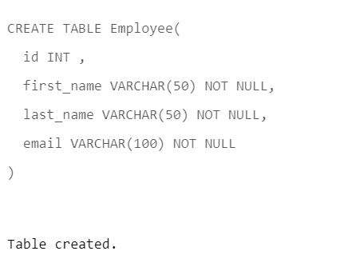

In SQL (Structured Query Language), creating tables refers to the process of defining a database table schema, which specifies the structure, attributes, and constraints of a table that will be used to store data. The syntax for creating a table in SQL typically involves using the CREATE TABLE statement, followed by the table name and a list of column definitions. Column definitions specify the name of each column, along with its data type and any constraints, such as nullability, unique constraints, and primary or foreign key constraints.
CREATE TABLE table_name (
column1 data_type1,
column2 data_type2,
...
);
Create a table whose name is Employee?
